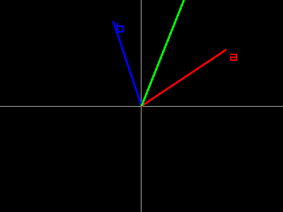
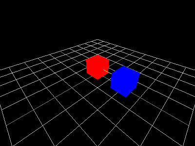

raylibr includes the full raymath library — vector, matrix, and quaternion operations commonly needed in graphics programming. These use plain R types, so standard R operations work alongside raymath functions.
R types as math types
| raymath type | R representation | Example |
|---|---|---|
| Vector2 | numeric(2) |
c(1.0, 2.0) |
| Vector3 | numeric(3) |
c(1.0, 2.0, 3.0) |
| Vector4 / Quaternion | numeric(4) |
c(0, 0, 0, 1) |
| Matrix | matrix(nrow=4, ncol=4) |
diag(4) |
No wrapper classes — just plain R numerics and matrices.
Float utilities
Basic math helpers that mirror GLSL built-in functions:
float_lerp(0, 10, 0.25)
#> [1] 2.5
float_clamp(15, 0, 10)
#> [1] 10
float_remap(5, 0, 10, 100, 200)
#> [1] 150Vector2 operations
Arithmetic, geometry, and interpolation on 2D vectors:
vector2_add(c(1, 2), c(3, 4))
#> x y
#> 4 6
vector2_length(c(3, 4))
#> [1] 5
vector2_normalize(c(3, 4))
#> x y
#> 0.6 0.8
vector2_distance(c(0, 0), c(3, 4))
#> [1] 5
vector2_dot_product(c(1, 0), c(0, 1))
#> [1] 0
vector2_lerp(c(0, 0), c(10, 10), 0.5)
#> x y
#> 5 5
vector2_rotate(c(1, 0), pi / 2)
#> x y
#> -4.371139e-08 1.000000e+00Visualized — adding vectors a and b:
raylibr_screenshot(function() {
ox <- 200L; oy <- 150L; s <- 40
draw_line(0L, oy, 400L, oy, "darkgray")
draw_line(ox, 0L, ox, 300L, "darkgray")
a <- c(3, 2)
draw_line_ex(c(ox, oy), c(ox + a[1]*s, oy - a[2]*s), 3.0, "red")
draw_text("a", as.integer(ox + a[1]*s + 5), as.integer(oy - a[2]*s), 20L, "red")
b <- c(-1, 3)
draw_line_ex(c(ox, oy), c(ox + b[1]*s, oy - b[2]*s), 3.0, "blue")
draw_text("b", as.integer(ox + b[1]*s + 5), as.integer(oy - b[2]*s), 20L, "blue")
ab <- vector2_add(a, b)
draw_line_ex(c(ox, oy), c(ox + ab[1]*s, oy - ab[2]*s), 3.0, "green")
draw_text("a+b", as.integer(ox + ab[1]*s + 5), as.integer(oy - ab[2]*s), 20L, "green")
})
Other useful Vector2 functions: vector2_scale(),
vector2_multiply(), vector2_negate(),
vector2_reflect(), vector2_clamp(),
vector2_move_towards().
Vector3 operations
The same operations extend to 3D, plus a few new ones:
vector3_add(c(1, 2, 3), c(4, 5, 6))
#> x y z
#> 5 7 9
vector3_cross_product(c(1, 0, 0), c(0, 1, 0))
#> x y z
#> 0 0 1
vector3_length(c(1, 2, 2))
#> [1] 3
vector3_normalize(c(1, 2, 2))
#> x y z
#> 0.3333333 0.6666667 0.6666667vector3_cross_product() returns a vector perpendicular
to both inputs — essential for computing surface normals and
orientation.
raylibr_screenshot_3d(function() {
draw_cube(c(0, 0.5, 0), 1, 1, 1, "red")
pos <- vector3_add(c(0, 0.5, 0), c(2, 0, 0))
draw_cube(pos, 1, 1, 1, "blue")
draw_line_3d(c(0, 0.5, 0), pos, "yellow")
})
Other key functions: vector3_rotate_by_axis_angle(),
vector3_project(), vector3_reject(),
vector3_unproject(), vector3_barycenter(),
vector3_ortho_normalize().
Matrix operations
Matrices represent transformations — translation, rotation, and scaling:
m <- matrix_identity()
m <- matrix_multiply(m, matrix_translate(1, 2, 3))
m <- matrix_multiply(m, matrix_rotate(c(0, 1, 0), pi / 4))
m <- matrix_multiply(m, matrix_scale(2, 2, 2))Matrix multiplication chains transforms. The order matters: the rightmost transform is applied first.
Camera-related matrices:
view <- matrix_look_at(c(4, 4, 4), c(0, 0, 0), c(0, 1, 0))
proj <- matrix_perspective(70 * pi / 180, 4/3, 0.1, 100)Decompose a matrix back into its components:
m <- matrix_multiply(matrix_translate(1, 2, 3), matrix_scale(2, 2, 2))
parts <- matrix_decompose(m)
parts$translation
#> x y z
#> 2 4 6
parts$scale
#> x y z
#> 2 2 2Quaternions
Quaternions represent 3D rotations without gimbal lock. They’re
stored as c(x, y, z, w):
q1 <- quaternion_from_euler(0, pi/4, 0)
q2 <- quaternion_from_axis_angle(c(0, 1, 0), pi/2)
# Smooth interpolation between two rotations
q_mid <- quaternion_slerp(q1, q2, 0.5)
# Convert to a matrix for use with draw_model_ex() etc.
mat <- quaternion_to_matrix(q_mid)quaternion_slerp() (Spherical Linear intERPolation)
produces smooth rotation transitions — essential for animation.
Other quaternion functions: quaternion_normalize(),
quaternion_invert(), quaternion_multiply(),
quaternion_from_matrix(),
quaternion_to_euler(), quaternion_nlerp().